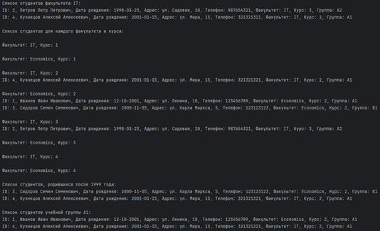
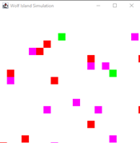

Введение
Учебная практика по теме «Разработка модулей программного обеспечения для компьютерных систем» (УП.01, ПМ.01) была направлена на практическое применение знаний, приобретённых в рамках образовательной программы, к разработке программных решений. Основной целью данной практики было освоение ключевых аспектов проектирования, реализации и тестирования программных модулей, а также приобретение практического опыта в области разработки программного обеспечения.
В ходе практики перед студентом были поставлены следующие задачи:
- Изучение и применение современных методов и инструментов разработки программных модулей для компьютерных систем.
- Разработка и реализация функциональных компонентов в соответствии с установленными требованиями и спецификациями.
- Проведение тестирования созданных модулей для обеспечения их функциональности, надёжности и эффективности.
- Анализ и оптимизация кода с целью повышения производительности и улучшения пользовательского опыта.
Эти задачи позволили студенту не только укрепить теоретические знания, но и получить ценный практический опыт в области программной инженерии. В представленном отчёте отражены результаты выполнения указанных задач, проведённый анализ достигнутых результатов и сделанные выводы, которые способствуют дальнейшему профессиональному развитию в области разработки программного обеспечения.
Решение задач
Задача 1
Определить принадлежность значения k интервалам (n, m], [n, m), (n, m), [n, m].
Блок-схема к заданию 1
Результат программы 1
Задача 2
ССоздать классы, спецификации которых приведены ниже. Определить конструкторы и методы setТип(), getТип(), toString().
Определить дополнительно методы в классе, создающем массив объектов. Задать критерий выбора данных и вывести эти данные на консоль.
В каждом классе, обладающем информацией, должно быть объявлено несколько конструкторов.
Student: id, Фамилия, Имя, Отчество, Дата рождения, Адрес, Телефон, Факультет, Курс, Группа.
- список студентов заданного факультета;
- списки студентов для каждого факультета и курса;
- список студентов, родившихся после заданного года;
- список учебной группы.
Блок-схема к заданию 2
Результат программы 2
Задача 3
Создать приложение, удовлетворяющее требованиям, приведенным в задании. Наследование применять только в тех заданиях, в которых это логически обосновано. Аргументировать принадлежность классу каждого создаваемого метода и корректно переопределить для каждого класса методы equals(), hashCode(), toString().
Создать объект класса Текст, используя классы Предложение, Слово.
Методы:
- дополнить текст
- вывести на консоль текст
- заголовок текста
Блок-схема к заданию 3
Результат программы 3
Задача 4
Создать класс Notepad с внутренним классом или классами, с помощью объектов которого могут храниться несколько записей на одну дату.

Блок-схема к заданию 4
Результат программы 4
Задача 5
В каждом слове текста k-ю букву заменить заданным символом. Если k больше длины слова, корректировку не выполнять
Блок-схема к заданию 5
Результат программы 5
Задача 6
Выполнить задания из задачи № 3, реализуя собственные обработчики исключений и исключения ввода/вывода.
Блок-схема к заданию 6
Результат программы 6
Задача 7
Составить программу получения на экране рисунков, изображенных в таблице.
Блок-схема к заданию 7
Результат программы 7
Задача 8
Спроектировать простое меню в одной строке экрана, которое обеспечивает перебор пунктов нажатием клавиши пробела, позволяет зафиксировать выбор нажатием клавиши Enter или отказаться от выбора нажатием клавиши Esc.
После выбора одного из пунктов в программу должно возвращаться какое-то значение, связанное с этим пунктом, например какой-то символ, а при отказе от выбора - символы #27.
Перед началом работы следует передать меню названия пунктов и возвращаемые символы (которыми могут быть первые буквы пунктов или какие-то специальные символы), что можно сделать в форме строки вида
«Первое Второе Третье»
или
«Первое (а) Второе (b) Третье (с)»
Здесь за названием пункта следует в скобках возвращаемый символ.
Состояние меню характеризуется его координатами на экране, номером отмеченного пункта, общим числом пунктов, перечнем названий пунктов и возвращаемых символов (во втором варианте представления).
Методами объекта являются:
Init - заполняет поле названий пунктов, подсчитывает число пунктов, делает выбранным первый пункт;
Select - позволяет выбрать пункт меню и возвращает символ выбранного пункта, а при отказе от выбора возвращает символы #27;
Draw - рисует меню, выделяя выбранный пункт цветом;
LeftBoard - возвращает начало названия данного пункта;
Len - возвращает длину названия пункта;
WhatSel - возвращает символ выбранного пункта.
Блок-схема к заданию 8
Результат программы 8
Задача 9
Задача «Волчий остров»
Волчий остров размером 20 × 20 заселен дикими кроликами, волками и волчицами. Имеется по несколько представителей каждого вида.
Кролики довольно глупы: в каждый момент времени они с одинаковой вероятностью 1/9 передвигаются в один из восьми соседних квадратов (за исключением участков, ограниченных береговой линией) или просто сидят неподвижно.
Каждый кролик с вероятностью 1/5 превращается в двух. Каждая волчица передвигается случайным образом, пока в одном из соседних восьми квадратов не окажется кролик, за которым она охотится.
Если волчица и кролик оказываются в одном квадрате, волчица съедает кролика и получает одно очко. В противном случае она теряет 0,1 очка. Волки и волчицы с нулевым количеством очков умирают.
В начальный момент игры все волки и волчицы имеют одно очко. Волк ведет себя подобно волчице до тех пор, пока в соседних квадратах не исчезнут все кролики; тогда если волчица оказывается в одном из восьми близлежащих квадратов, волк гонится за ней.
Если волк и волчица окажутся в одном квадрате и там нет кролика, которого нужно съесть, они производят потомство случайного пола.
Создать соответствующую экологическую модель и проследить изменение популяции волков и диких кроликов в течение некоторого периода времени.
Блок-схема к заданию 9
Результат программы 9
Задача 10.1
Индивидуальный вариант: N DQ ? ; число без знака Не используя арифметические команды, реализовать оператор (1 вариант) N := N * 2 Решение должно содержать не более трёх команд.
Результат программы 10.1
Задача 10.2
(написать задание)
Результат программы 10.2
Этап 2: Разработка АИС «Ресторан»
2.1 ER-диаграмма, диаграмма классов, диаграмма вариантов использования.
ER-диаграмма
Диаграмма классов
Диаграмма вариантов использования
Техническое задание
1. Наименование системы: Система управления Ресторан
1.1. Основания для разработки: Анализ текущих потребностей ресторана в автоматизации процессов управления меню, клиентами, заказами и отчетностью.
2. Цель разработки
Целью разработки системы является создание автоматизированной программы для управления данными ресторана, включая управление блюдами, категориями, заказами и клиентами. Это позволит ускорить процессы обслуживания, улучшить учет продаж и предоставит возможность анализа финансовых показателей.
3. Область применения
Система будет использоваться в ресторане для управления меню, обработки заказов, учета и управления категориями блюд, а также для отслеживания и анализа продаж, что способствует более эффективному обслуживанию клиентов и оптимизации ресторанных процессов.
4. Требования к системе
4.1. Функциональные требования
Система должна предоставлять следующие функции:
- Управление данными блюд (создание, чтение, редактирование, поиск и удаление записей).
- Управление категориями блюд (например, закуски, основные блюда, десерты, напитки).
- Управление данными заказов (создание, чтение, редактирование, поиск и удаление записей).
- Управление данными клиентов (создание, чтение, редактирование, поиск и удаление записей).
- Авторизация и доступ для различных ролей (например, администратор и пользователь).
- Фильтрация блюд по категориям для упрощенного просмотра меню.
4.2. Нефункциональные требования
- Интерфейс: Простой и интуитивно понятный интерфейс, разработанный с использованием библиотеки Tkinter, для легкого доступа к функциональности системы.
- Безопасность данных: Должны быть предусмотрены средства аутентификации для защиты данных от несанкционированного доступа.
- Производительность: Высокая скорость обработки запросов к базе данных.
5. Требования к надежности
5.1. Защита данных: Система должна обеспечивать регулярное резервное копирование базы данных SQLite.
5.2. Отказоустойчивость: Система должна корректно обрабатывать ошибки, связанные с вводом данных, и оставаться работоспособной при сбоях.
6. Условия эксплуатации
- Операционная система: Windows 10.
- Среда разработки: IntelliJ IDEA с использованием Python.
- База данных: SQLite для локального хранения данных.
7. Требования к программному обеспечению
7.1. Язык программирования: Python.
7.2. Библиотеки: Tkinter для графического интерфейса.
7.3. Среда выполнения: Python 3.x.
7.4. База данных: SQLite.
8. Требования к документированию
Для системы должны быть предоставлены следующие документы:
- Руководство пользователя для работы с системой.
- Руководство администратора для управления данными ресторана и настройками системы.
- Техническое руководство по установке и настройке системы.
9. Этапы разработки
9.1. Анализ требований и составление технического задания.
9.2. Проектирование системы и базы данных.
9.3. Разработка интерфейса и реализация функциональности.
9.4. Тестирование системы и устранение ошибок.
9.5. Внедрение системы и обучение сотрудников.
10. Порядок контроля и приемки
10.1. Приемка: Система считается принятой, если она соответствует всем требованиям ТЗ и успешно проходит все этапы тестирования.
10.2. Контроль качества: Регулярное тестирование и проверка системы перед внедрением.
2.3 Основные функуии
Окно «Вход в систему» (Авторизация)
Главное окно программы
Окно «Выбор категорий» для блюд
Окно выполненной операции «Выбор категорий»
Окно «Редактирования блюда» (доступ администратора)
Окно «Добавление нового блюда»
Реализация АИС в 1С
Разработка мобильного приложения
Главный экран приложения «Ресторан»
Экран «Блюда»
Экран «Резервация»
Экран «Остатки ингредиентов»
Экран «Персонал»
Ссылка на проект: https://github.com/Kaazzah